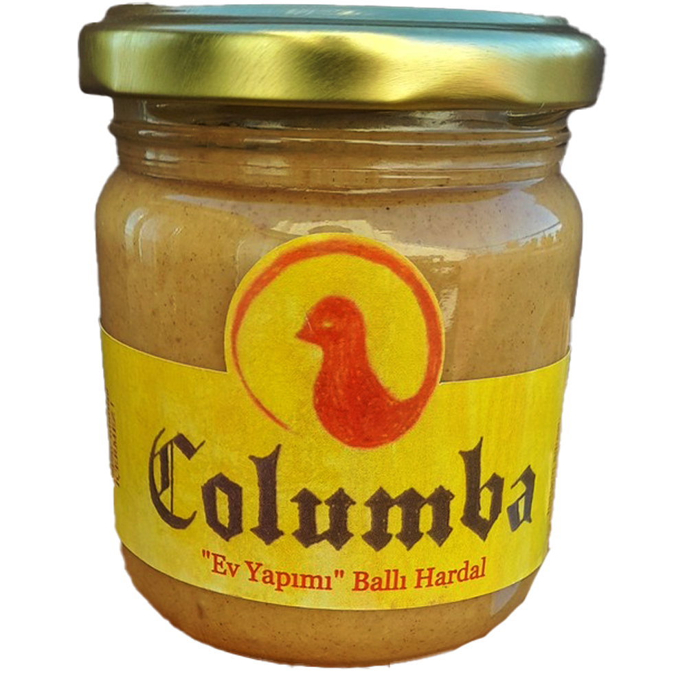
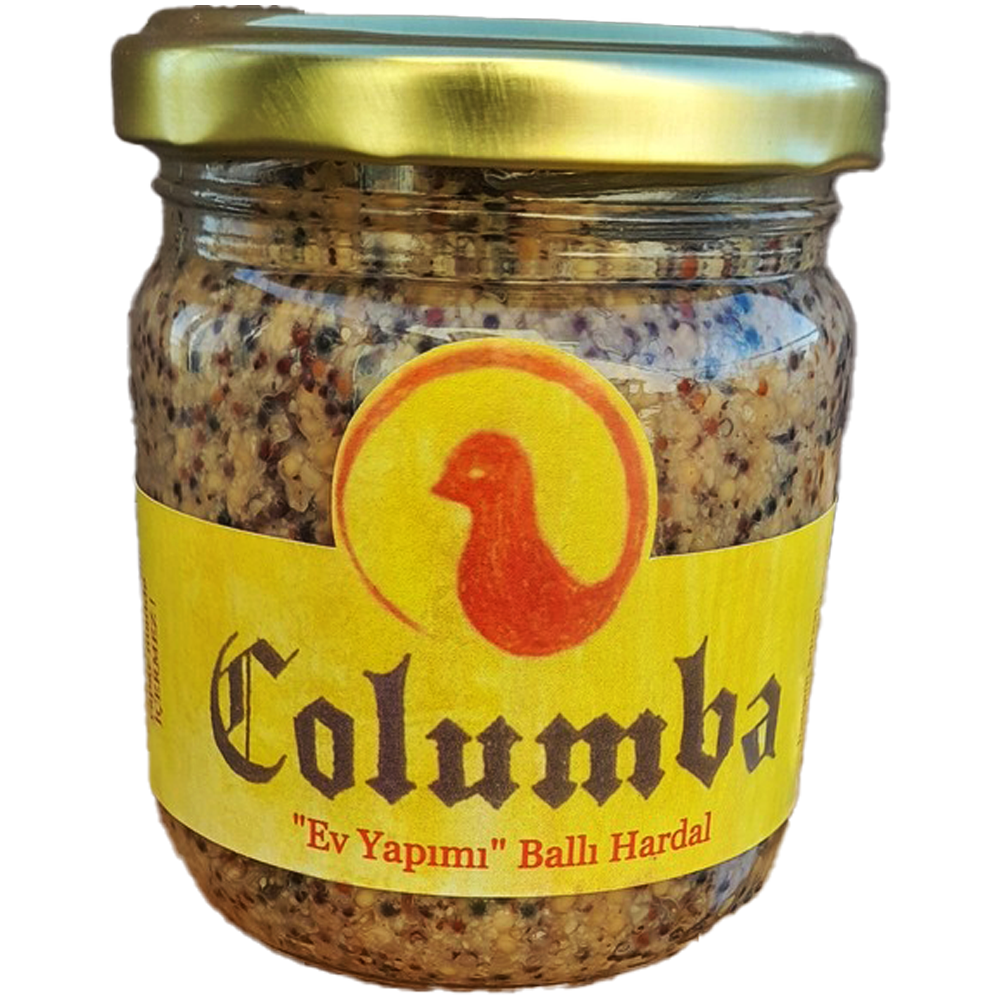
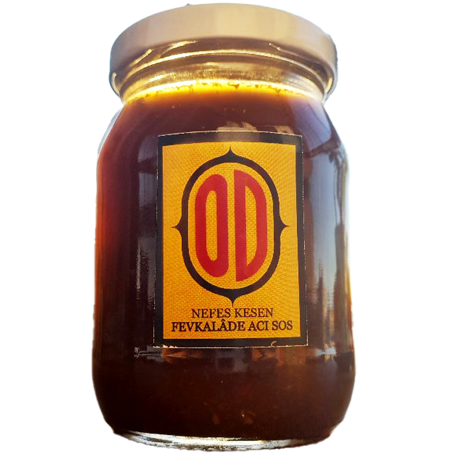
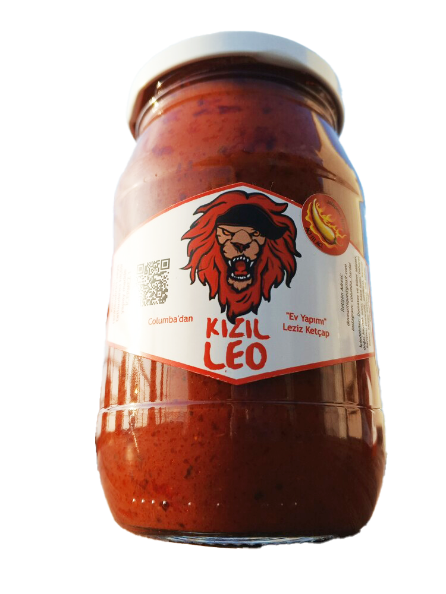

Ev yapımı gerçek hardal, acı biber sosu ve ketçap.

İki çeşit olarak ürettiğim ballı hardalların ilki...
Siparişinizden hemen sonra anlık ve taze olarak üretilip kavanozlanarak gönderilir.
Her türden et ve şarküteri ürünlerine, salatalara, soslara ve hatta yemeklere yakışan bu hardalı kızarmış ekmek ve tereyağıyla da deneyebilirsiniz.
Yıllar içinde çevremdeki gusto sahibi dostlarımdan aldığım geri dönüşlerle oturttuğum reçetedeki malzemeler aşağıda:
• Öğütülmüş hardal tohumu tozu
• Bal (Çiçek veya Çam)
• Doğal kaynak suyu
• Pancar Şekeri
• Ayçiçek yağı
• Beyaz sirke
• Tuz
Halihazırda mutfağımızda da kullanmakta olduğumuz bu basit malzemeler dışında hiçbir endüstriyel katkı maddesi, koruyucu, renklendirici veya tatlandırıcı içermez.

İki çeşit olarak ürettiğim ballı hardalların ikincisi...
Siparişinizden hemen sonra anlık ve taze olarak üretilip kavanozlanarak gönderilir.
Her türden et ve şarküteri ürünlerine, salatalara, soslara ve hatta yemeklere yakışan bu hardalı kızarmış ekmek ve tereyağıyla da deneyebilirsiniz.
Yıllar içinde çevremdeki gusto sahibi dostlarımdan aldığım geri dönüşlerle oturttuğum reçetedeki malzemeler aşağıda:
• Hardal tohumu
• Bal (Çiçek veya Çam)
• Doğal kaynak suyu
• Pancar Şekeri
• Ayçiçek yağı
• Beyaz sirke
• Tuz
Halihazırda mutfağımızda da kullanmakta olduğumuz bu basit malzemeler dışında hiçbir endüstriyel katkı maddesi, koruyucu, renklendirici veya tatlandırıcı içermez.

Gerçek acı severler için Arnavut Biberi ve Jalapeno sosu. Sıvı kıvamlı ateş parçası köz damlaları karanfil ile sihirli bir bağ kurarak enfes bir yangına dönüşüyor.
İçindekiler:
• Arnavut Biberi
• Jalapeno Turşusu
• Karanfil
• Toz şeker
Halihazırda mutfağımızda da kullanmakta olduğumuz bu basit malzemeler dışında hiçbir endüstriyel katkı maddesi, koruyucu, renklendirici veya tatlandırıcı içermez.

Uzun denemeler neticesinde mükemmel lezzetine ulaştırdığımız ketçabımız.
İçindekiler:
• Domates ve biber salçası
• Jalapeno biberi turşusu
• Doğal kaynak suyu
• Toz kırmızı biber
• Pancar şekeri
• Ayçiçek yağı
• Kaya Tuzu
• Zencefil
• Zerdeçal
• Kimyon
• Tarçın
• Kekik
• Nane
Herhangi bir Türk evinin mutfağında bulunan bu klasik malzemeler ve geleneksel yöntemlerle hazırladığım bu tamamen doğal, katkısız ve leziz ürünü ailenize ve çocuklarınıza güvenle yedirebilir, dostlarınız ve sevdiklerinize ikram edebilirsiniz.
Ya da en güzeli kendinize bir iyilik yapın ve bu eşsiz lezzetle hayatınızı güzelleştirin...